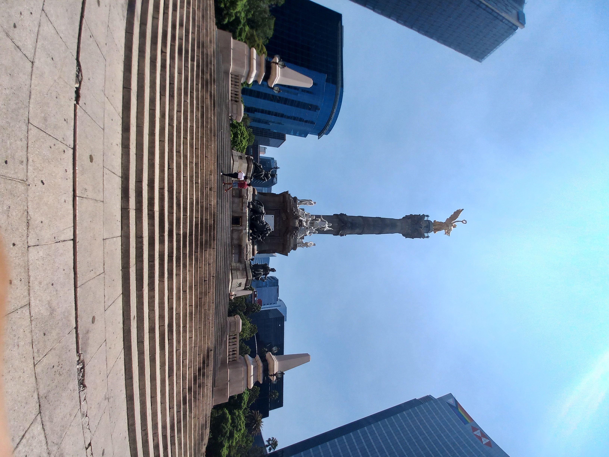
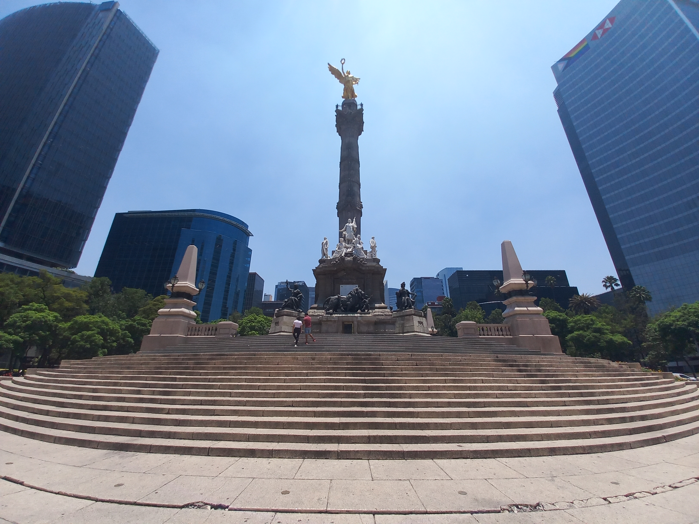
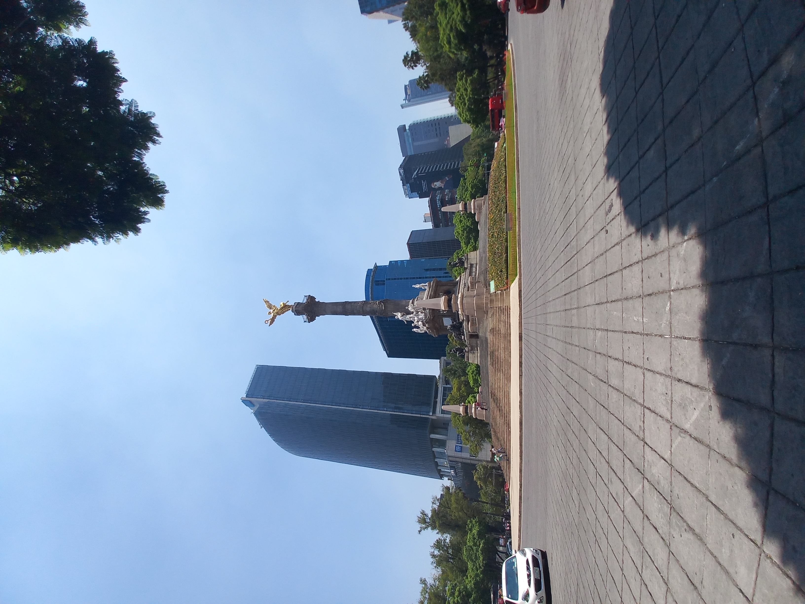

El Ángel de la Independencia
Terminada la independencia, se consideró construir en el centro no ocupado por el Mercado del Parián de la plaza de armas de la ciudad de México, un monumento a la independencia, similar al que se había construido años antes al rey español Carlos III durante el virreinato. Es así como se convocaron varios concursos entre 1821 y 1843, que nunca fructificaron por el constante cambio de gobierno.
En 1843 el entonces presidente Antonio López de Santa Anna convocó, con el apoyo de la Academia de San Carlos, un concurso para seleccionar un proyecto para erigir un monumento a la Independencia. Las bases del concurso solicitaban que el proyecto contemplara las siguientes características: que sea un monumento basado en una columna honoraria con una altura mínima de 42 m, rematada por una estatua de la victoria, a cuyo pie esté una base o pedestal adornada por estatuas y bajorrelieves, todo rodeado por una reja y otros monumentos menores que adornaran la plaza, todo recubierto de mármol, con estatuas y adornos de bronce.
Inspirada en las columnas honorarias de los romanos, como la Columna de Trajano, es muy similar a otros monumentos modernos como el dedicado a la victoria o columna de la victoria en Berlín, Alemania la Columna de Julio en París, Francia y el Columbus Circle (Círculo de Colón) en la ciudad de Nueva York, Estados Unidos. La altura de la columna, incluyendo la Victoria alada, es de 45m, más 1,5 m que tienen las gradas construidas en 1910 y 3 m adicionales que tienen las gradas construidas en 1986, para un total de 49,5 m, y que muestran el hundimiento de la ciudad. Este monumento tiene para fines prácticos una orientación oriente–occidente. Sobre todo se encuentra una estatua hueca de bronce, que representa a la Victoria Alada en actitud de vuelo con las alas abiertas, con el brazo derecho extendido y sosteniendo una corona de laurel en actitud de colocarla sobre la cabeza de los héroes; el brazo izquierdo extendido hacia abajo y atrás sosteniendo en la mano una cadena rota de tres eslabones, símbolo de los tres siglos del virreinato y la dependencia política de España. Toda ella revestida por hoja de pan de oro. A esta estatua se le da en específico el nombre popular de Ángel o el Ángel de la Independencia.
 
 Regresar
Regresar